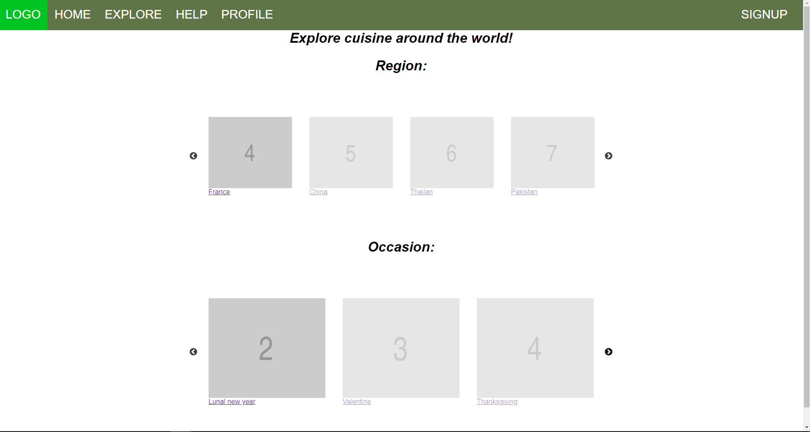
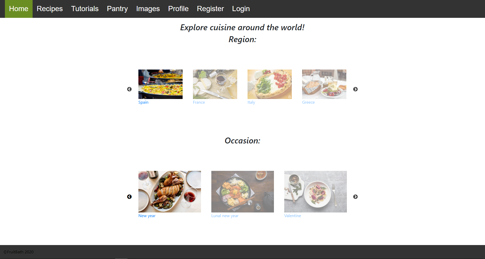
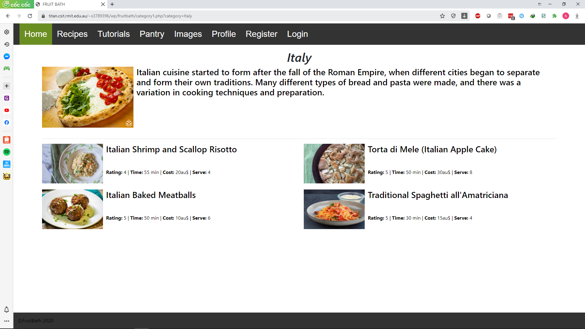
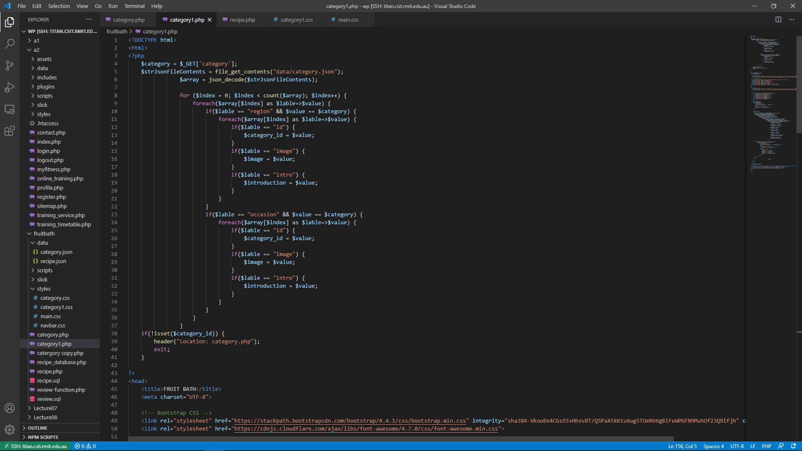

MVF 5: Categories
Description:
The world is wide and divide in many region, and throughout the history, the way we prepare and cook the food become different. So that, the category feature is created to help the user to explore the cuisine in different region and in many special occasion around the world and then you may found your favourite cuisine to pleasure your stomach.Users can choose one region or one special time in year from our list of catogory, then the website will redirect to the corresponding page and show a list of recipe with the rating, the time to cook, costing, and the number of people that it nomally served.
Outcomes
The skeleton of the website including the css file is done within a week but the function of the page that show different category from a database took another week to work on the website
 after the user choose a category, the page will be redirect to the new page with the url end with "...category1.php?category=[your category]" that is also how the variable of the category tranfer from the previous page. And then the php code will do the validate check to see if the category is valid in the database. If the category is not found, the page will return to the previous page so if the user try to manipulate the url, it won't work.
 Windfall
The inexperience in php and database have increased the amount of time needed, but the feature is still complete before the due date.